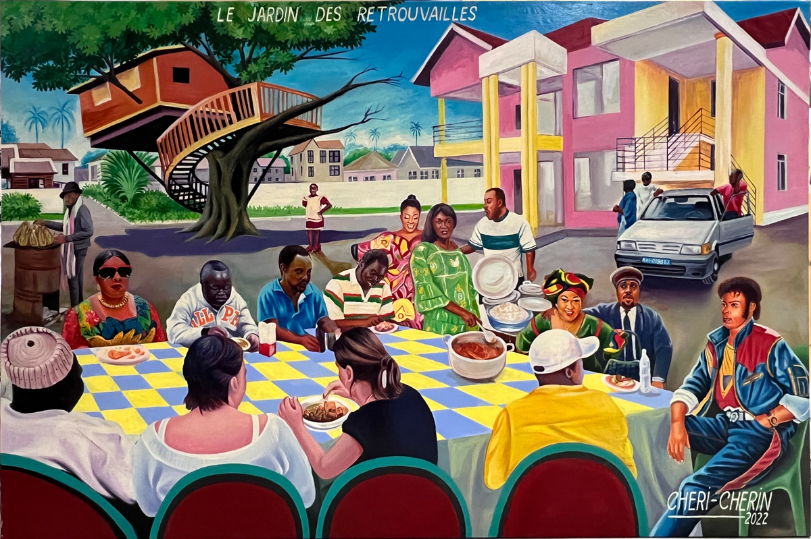
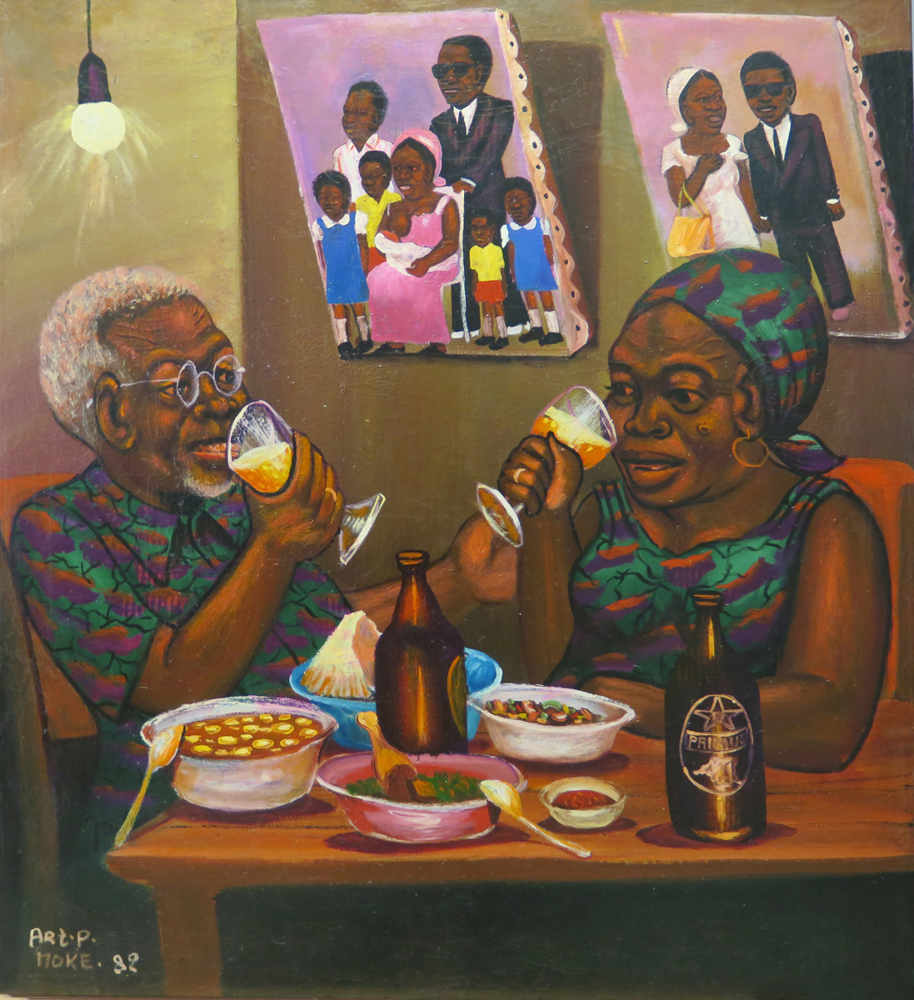
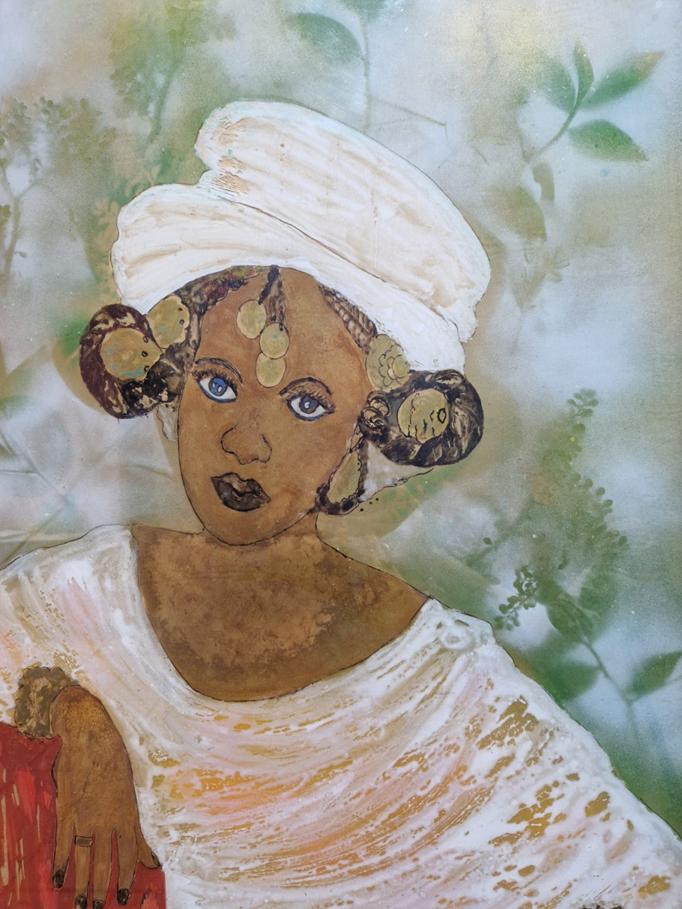
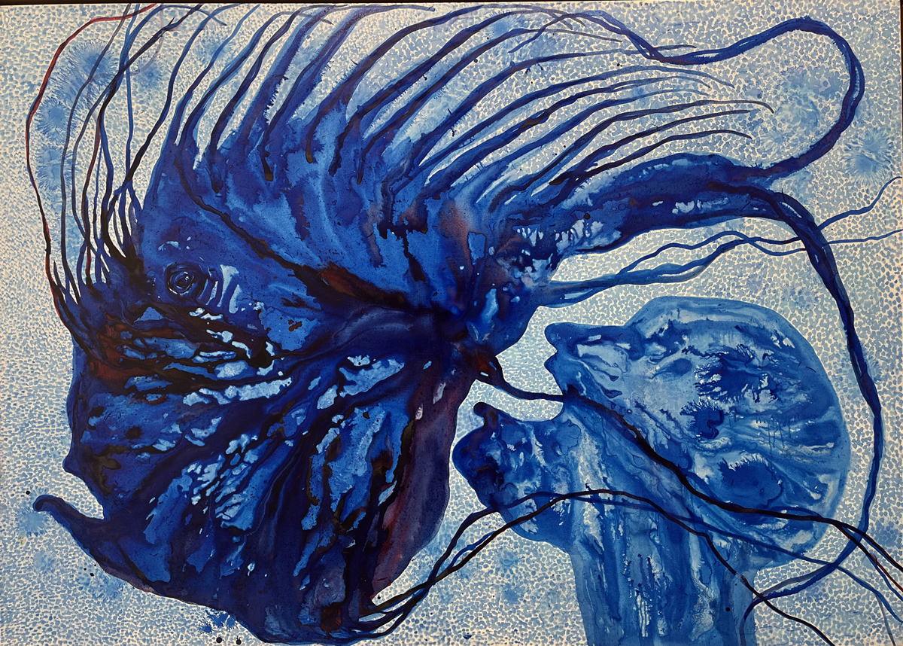
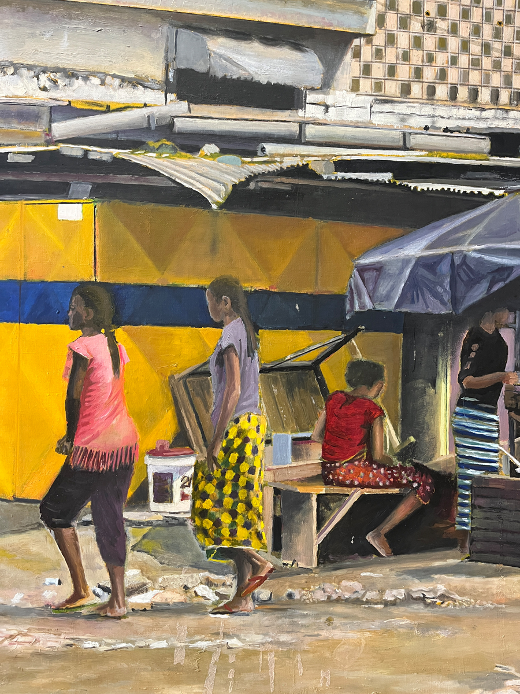
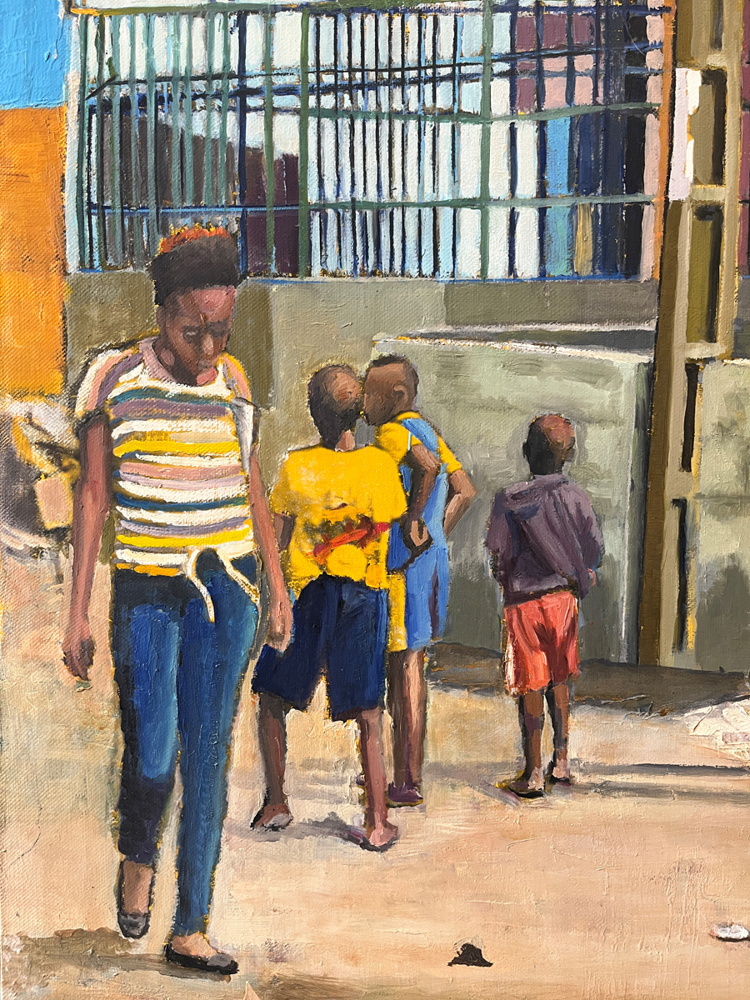

Alors que l'art contemporain africain gagne en visibilité sur la scène internationale et que de nouveaux musées émergent sur le continent, la question de la préservation des œuvres devient cruciale.
Le manque de formation spécialisée et la diversité des matériaux utilisés par les artistes rendent la conservation complexe mais essentielle.
ArtPulse Africa œuvre à sensibiliser les artistes, artisans et acteurs culturels aux enjeux de la conservation et de la transmission du patrimoine.
En novembre 2024, dans le cadre de la 15e édition de la Biennale de Dakar et en partenariat avec la Direction du Patrimoine Culturel du Ministère de la Culture du Sénégal, nous avons organisé


Un séminaire sur les approches théoriques et pratiques de la conservation et de la préservation des œuvres d'art, tenu au sein de la Direction du Patrimoine Culture. Ce programme de formation s'est déroulé sur une semaine, combinant théorie et pratique, et a réuni des responsables, conservateurs et techniciens de diverses institutions de Dakar et d'autres régions du Sénégal.
Un atelier sur les techniques artistiques, auquel ont participé une quarantaine d'artistes venus de Dakar, du Sénégal ou d'autres pays africains.
Un Talk consacré aux enjeux de la conservation et de la préservation de l'art contemporain et du patrimoine culturel africain, réunissant sept intervenants de la scène artistique sénégalaise et internationale tel que Oumar Badiane, Anne-Marie.
Titulaire d'un Master en Histoire de l'art de l'Université de Genève. Andrea Hoffmann Dobrynski débute sa carrière chez Sotheby's à Genève avant de se spécialiser dans la conservation-restauration de tableaux. Forte de plus de 30 ans d'expérience, elle est la fondatrice et directrice de l'atelier Hoffmann Art Management. Elle participe également à des projets de protection et de sauvegarde du patrimoine, notamment dans le cadre de la rénovation du Palais des Nations de l'ONU à Genève.




Directrice de la Fondation Blachère, centre pour l'art contemporain africain, France,
Collectionneur d'art contemporain africain vivant entre Dakar et Genève
Commissaire d'exposition, Dakar
Entrepreneur et collectionneur d'art, neveu de l'artiste béninois Romuald Hazoumé
Archéologue, ancien directeur du Musée d'Art et d'Histoire, Genève, professeur associé de l'Université Senghor, Alexandrie
Artiste sénégalais, lauréat du Prix du Maire de la Ville de Dakar, 15e édition de la Biennale de Dakar, 2024
Directeur de la galerie Christophe Person, Paris, anciennement responsable du département d'art contemporain africain chez Piasa et Artcurial
Artiste sénégalo-suisse, enseignant et chef du département des Arts et Design à l'Ecole Internationale, Genève
une Master Class traitant différentes thématiques autour des métiers d'art et des techniques artistiques à laquelle ont participé une vingtaine d'artistes en résidence ou venus du Bénin et des pays avoisinants.
4ter route des Jeunes
CH-1227 Genève
PulseAfrica@gmail.com
0798488195
Facebook
Youtube